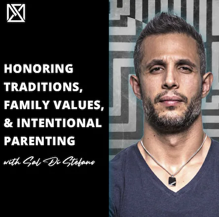

B856 · Honoring Traditions, Family Values, and Intentional Parenting
Hi {first_name},
Sal Di Stefano, co-host of the wildly popular podcast Mind Pump, is joining me today on The Path!
While Sal has an incredibly vast amount of knowledge and experience in the fitness industry, this conversation takes another direction. Sal and I share being first-generation Americans, coming from a culture steeped in family tradition and values. In this episode, we focus on the blending of traditional Italian culture with more modern times. There is a lot to be gained from maintaining values that have been passed down, as well as re-patterning generational cycles that no longer have a place today.
In Episode #8 of The Path Podcast, Sal and I discuss:
 Click here to listen on Spotify. Click here to listen on Apple.
Yours in health and strength, Mike |